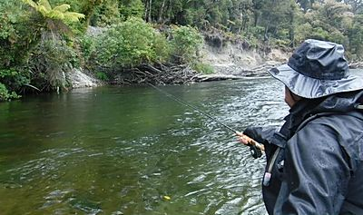
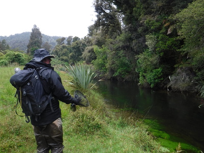
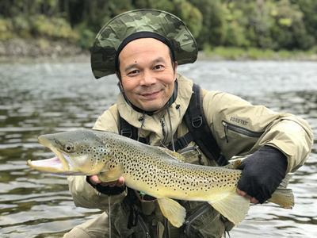
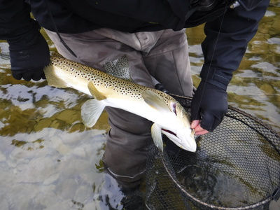
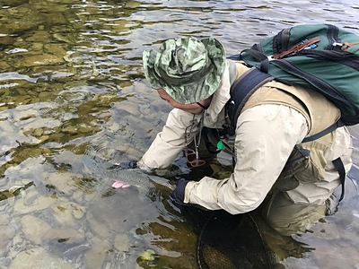

釣行日誌 ＮＺ編 「一期一会の旅：A Sentimental Journey」
懐かしのスプリングクリークへ
11/24(SAT)-4
何と、さっきの倒木の瀬だけで連続５尾を上げることが出来た。雨粒の波紋と少ない光量とでまったく魚影は見えないブラインドの釣りだったが、スイングする途中でガツン！と当たるストリーマーの釣りを満喫した。ディーンが、
「また貸して。」(笑)
と言うのでロッドを渡すと、さらに同じ瀬の中から60cm級と40cm級とを２尾引き出した。気を良くした彼はもう１度下って合流点の淵を攻め直した。僕が釣れなかった大物２尾を狙っているのだ。

１番奥まった、崖と流木に囲まれた淀み、さらに上手のブッシュの陰、フォルスキャストでは少しのホール、ラストの素早いホールで見事な遠投を見せてくれた。対岸ギリギリへとストリーマーが次々に打ち込まれてゆく。さっき、ここでの僕の１尾は“釣れた”のだが、もしディーンに１尾掛かれば、まぎれもなく彼の腕で“釣った”ということになるだろう。残念ながら、彼の腕をもってしてもアタリが無かったので、２人であのスプリングクリークへと偵察に行くことになった。
『またあの急流で、デカイのを掛けたら今度こそ悲惨なことになるな....。』
と心配半分、期待半分で大股のディーンの後を付いて行く。８年の年月を経て、親子２人の名ガイドの後ろを歩いて行くのは感慨深いものがあった。

15分ほど遡行して探し歩いたが、今日のこの流れには魚影が見当たらなかった。上流のどん詰まりにも、大物の気配は無かった。こりゃ残念、とまた踵を返して本流へと戻る。時刻は午後３時半過ぎだった。
右曲がりの大きなカーブの上流に、長い瀬と、そのアタマの流れ込みの深みが見えた。雨もやみ、何とか水の中が見通せたので、今度は鱒の姿を探しながら静かに遡行してゆく。流れ込みまで魚影が無かったので、流心の波立つポイントの手前から奥の流心へと、今日実績のあるホワイトベイトパターンで探ってみることになった。何本かの筋の上流へ白いフライを打ち込んでから少し深みへ送り込んだあとでストリッピングしてくる。３ｍくらい間隔を空けて次の筋を続けて探る。対岸近くがえぐれて深くなっており水の色が暗い。少し沈めてから引き始めると、ゴクン！と重いアタリ！
『こりゃデカそうだぞ！』
遠くの水中でグネリと魚体を捻転させたブラウンは60cm級に見えた。が、その割りに大人しく、ダッシュもジャンプも見せずに楽々と寄ってきた。が、ディーンがネットを水に入れて構えた途端に激しい抵抗を見せ、急にラインを引き出して逸走した。
「うわっ！まだまだ元気だっ」
若干焦ったが、教わったとおりに下流にロッドを倒し、サイドプレッシャーを掛けると再び鱒が寄ってきた。ディーンが水底に沈めた黒いネットの上まで魚体を引いてくると、スッと網を持ち上げてランディング成功！
「Good boy!」
「サンキュー！」

少々痩せてはいたが、頭の大きな見事なオスだった。顎の左側に必殺のホワイトベイトパターンストリーマーのフックがしっかりと刺さっていた。


「今日はたくさん釣ったから、もう引き返そうか？」
「ああ、そうだな。」
僕が言うと、ディーンがそう答えた。時刻は午後４時前だった。
「ゴウ、今日は何尾釣った？」
「うーん....覚えていないなぁ。さっぱり判らんよ。」
すると彼は、あそこで X尾、あそこで Y尾、あの瀬で Z尾....などと数え出し、
「今日は合計16尾だったな。」
と言った。
「本当かい？！ Sixteen fish?」
あまりに忙しい１日で、全ての魚について写真もメモも取る余裕は無かったが、望外の好釣果だった。
釣行日誌ＮＺ編 目次へ
サイトマップ
ホームへ
お問い合わせ